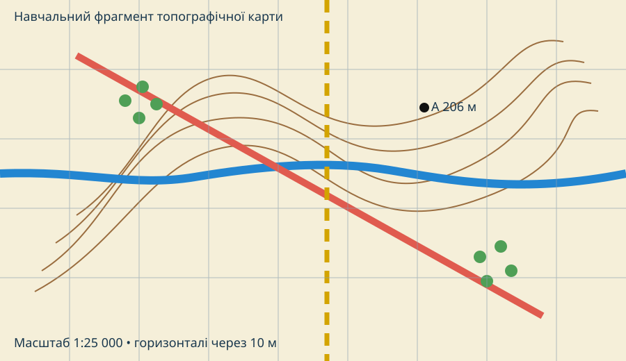

Карта — це закодована місцевість
Завдання: уявіть, що GPS зник. Вам треба пройти від дороги до точки A, не перейти річку в небезпечному місці й уникнути найкрутішого схилу. Які елементи топографічної карти потрібні першими?
Лабораторний фрагмент

Де горизонталі зближуються найбільше? Це крутий чи пологий схил?
Знайдіть водотік. Як горизонталі поводяться біля долини?
Чи перетинає дорога водотік? Яка додаткова інформація потрібна, щоб вирішити, чи безпечний перехід?
У масштабі 1:25 000 один сантиметр на карті відповідає 250 м на місцевості.
Чотири практичні станції
Випишіть щонайменше 4 типи об’єктів, які видно на фрагменті. Для кожного зазначте: площинний, лінійний чи точковий знак.
Точка A має абсолютну висоту 206 м. Якщо сусідня горизонталь — 200 м, поясніть, де точка лежить відносно цієї горизонталі й чому підпис висоти точніший.
На карті відрізок має 6,4 см. За масштабу 1:25 000 обчисліть реальну відстань у кілометрах. Запишіть усі перетворення одиниць.
Поясніть, навіщо топографічні карти розбивають на аркуші й присвоюють їм індекси. Чому назва населеного пункту не може повністю замінити номенклатуру?
Порівняння з реальною онлайн-картою
Доказове питання: чому онлайн-карта може бути актуальнішою за паперову, але не обов’язково кращою для аналізу рельєфу?
Метадані важливі: дата оновлення, джерело висот, масштаб/рівень наближення, система координат і призначення шару.
Теорія після практики
Лінії однакової абсолютної висоти. Чим ближче вони одна до одної, тим крутіший схил.
Показує, у скільки разів зменшено відстані. 1:25 000 означає: 1 см = 250 м.
Прямокутна координатна сітка допомагає швидко локалізувати точки й вимірювати відстані.
Поділ земної поверхні на стандартні аркуші карт.
Система індексів аркушів, яка однозначно визначає їх положення.
Це інтерпретація взаємозв’язків: рельєф + вода + дороги + забудова + рослинність + масштаб.
CER: де прокладати маршрут?
Оберіть безпечніший напрямок руху до точки A.
Наведіть мінімум 3 докази з карти: горизонталі, водотік, дорога, масштаб, рослинність.
Поясніть, як кожен доказ впливає на прохідність і ризик.
Практична перевірка • 10 балів
Спочатку введіть дані учня.
Домашнє завдання
§ 9. Відкрийте місцевість у OpenStreetMap або OpenTopoMap. Оберіть маршрут 1–2 км і запишіть: 1) які об’єкти ви прочитали за умовними знаками; 2) де можливий складний рельєф; 3) яку відстань отримали; 4) яких даних бракує для повноцінної топографічної оцінки.